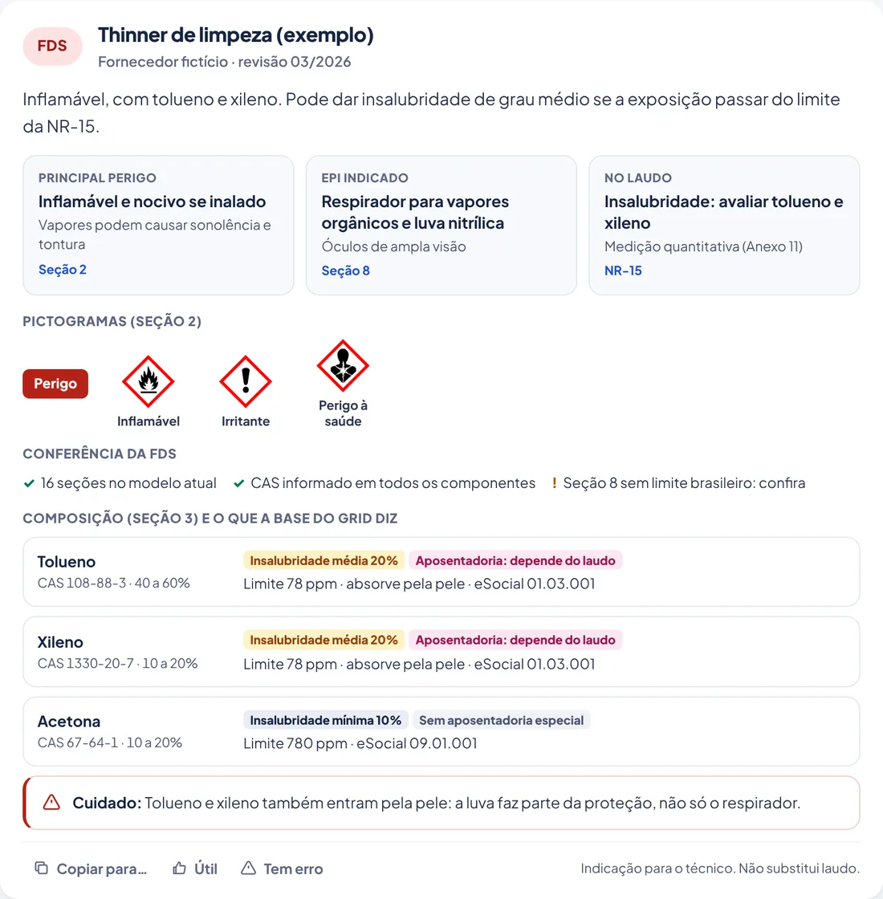
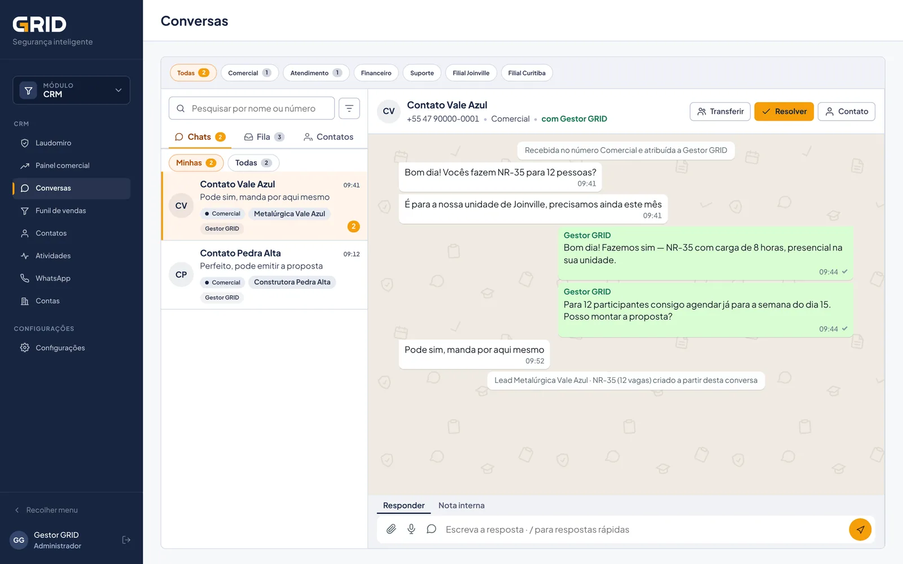
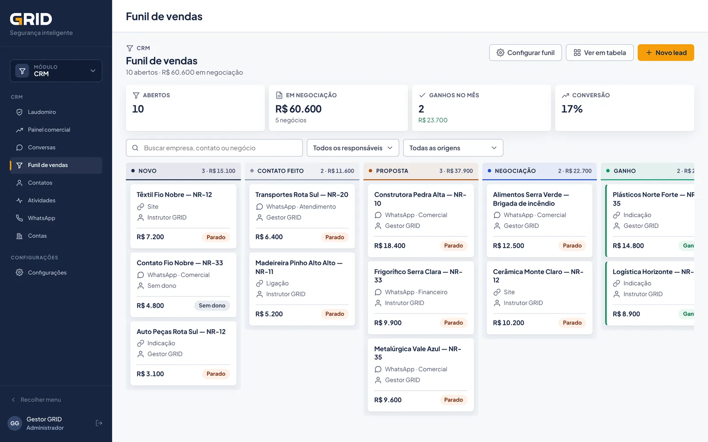
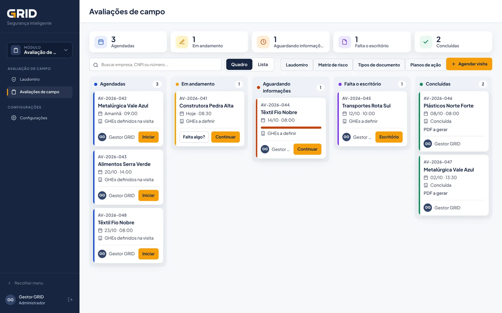
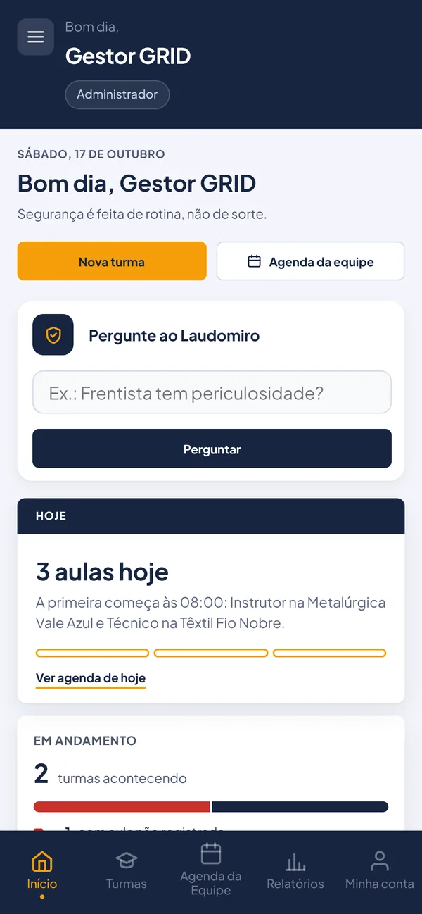
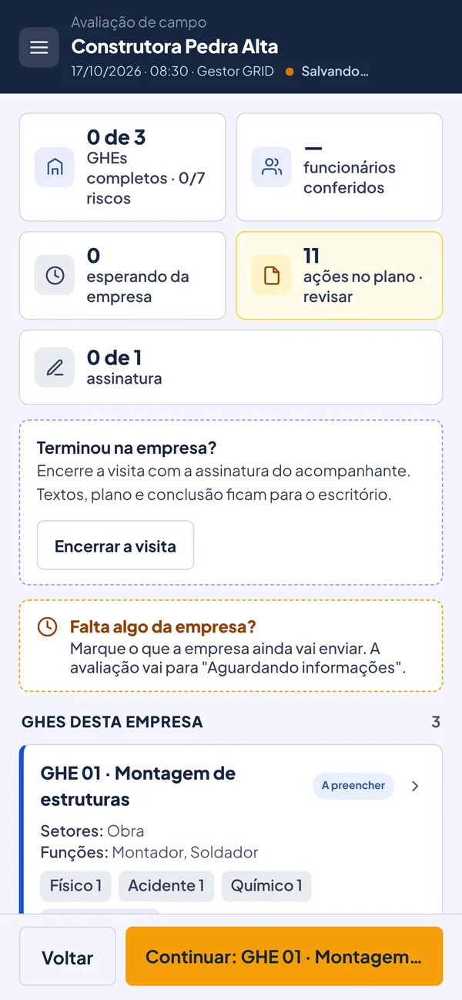

Treinamentos, campo, vendas e um especialista de IA. Num só sistema.
O GRID junta a gestão de treinamentos, a avaliação de campo e o CRM com WhatsApp. E traz o Laudomiro, uma inteligência artificial especialista em segurança do trabalho, ligada a tudo isso. No computador e no celular.
Não é um chat. É um especialista em segurança do trabalho dentro do GRID.
Ele lê a norma, a FDS e a foto do local. Consulta os dados da sua empresa sem mandar nomes para fora. E melhora toda semana, sempre com aprovação de um técnico.
Laudomiro
Responde com o item da norma
Pergunte como perguntaria a um colega. Ele responde com o item da NR e mostra o texto oficial de onde tirou. Cobre as 36 NRs em vigor, as instruções dos bombeiros de SC e os eventos de SST do eSocial.
Frentista tem periculosidade?Na visita
Tolueno conta para aposentadoria especial?Nos agentes químicos
O treinamento de NR-35 pode ser a distância?Nos treinamentos
Lê a FDS e diz o que ela significa
Envie até 5 FDS de uma vez. Ele confere a ficha, lê a composição e mostra o que cada produto representa para insalubridade, aposentadoria especial e eSocial. Com várias, compara lado a lado.

Tela real, produto de exemplo
Olha a foto do local de trabalho
Mande a foto da obra ou da máquina. Ele aponta os riscos, o EPI que falta em cada pessoa e lista o que só dá para conferir no local.
ALTA · Sem cinto de segurançaALTA · Guarda-corpo incompletoMÉDIA · Sem capaceteIlustração
A foto não fica guardada no GRID
Consulta os dados da sua empresa
"Quem está com NR-35 vencendo?" Ele busca no GRID, monta a lista e já oferece o botão para criar a turma. A IA só entende a pergunta: os nomes das pessoas nunca saem para ela.
Sistema real, dados fictícios
Transforma a resposta em documento
Da leitura de uma FDS saem textos prontos para colar: o inventário do PGR, a ordem de serviço do trabalhador e um DDS de 5 minutos sobre o produto.
Para o PGRPerigos, agentes e EPI do produto
Para a ordem de serviçoRiscos e cuidados em linguagem de trabalhador
Para o DDS5 minutos de conversa sobre o produto
Uma base própria, conferida no texto oficial
Ele responde a partir de uma base de normas e de fichas de agentes de risco montada e conferida nos textos oficiais (NR-15, Decreto 3.048, Tabela 24 do eSocial). Mostra a fonte de cada resposta e avisa quando não encontra.
192 fichas de agentesQuímicos, físicos, biológicos e de periculosidade: limite, insalubridade, aposentadoria especial e código do eSocial
Normas acompanhadas toda semanaNovas portarias entram na base depois de conferidas
Aprende, mas só com aprovação
Toda semana ele estuda as perguntas que não soube responder e propõe respostas novas, com a fonte. Nada entra sozinho: a resposta só passa a valer depois que um técnico aprova.
Pergunta sem respostaVira uma sugestão com a fonte oficial
Técnico revisaAprova ou recusa
AprovadaPassa a valer para todos os clientes
Faz prova toda semana
Toda segunda-feira ele responde 40 perguntas de controle. Se errar alguma que acertava antes, a equipe fica sabendo antes de você.
40 perguntasNormas, agentes químicos, treinamentos e eSocial
Toda segundaResultado comparado com a semana anterior
36NRs em vigor na base
192fichas de agentes de risco
40perguntas de prova por semana
5FDS comparadas de uma vez
Cada parte alimenta a outra.
O treinamento avisa a renovação, a conversa do WhatsApp vira proposta e a visita de campo gera o plano de ação. Sem planilha no meio.
Gestão de treinamentos
Do agendamento ao certificado, com a renovação no radar.
Turmas, agenda dos instrutores e salas
Lista de presença assinada no celular
Certificado com QR Code que qualquer um valida
Vencimentos e turmas sugeridas antes de vencer
CRM com WhatsApp
Os números da empresa num só lugar, com a equipe atendendo junto.
Fila, transferência e respostas rápidas
Vários números e várias pessoas
A conversa vira oportunidade com um clique
Atendimento e venda no mesmo sistema da segurança do trabalho.
Funil de vendas
Cada proposta numa etapa, com valor, origem e responsável.
Quadro ou tabela
Quanto está em negociação e quanto foi ganho
Oportunidades paradas ficam marcadas
Avaliação de campo
A visita técnica feita no celular, do GHE ao relatório.
GHE por GHE, com riscos e matriz de risco
Plano de ação 5W2H pronto para o SOC
Assinatura do acompanhante e relatório em PDF
Empresas, hierarquia e GHE trazidos do SOC



No campo, o GRID vai no bolso.
O mesmo sistema do escritório, feito para usar em pé, na obra ou na fábrica.
Visita técnica sem sinalA avaliação continua salva no aparelho e sobe quando a internet volta.
Presença assinada na telaO participante assina com o dedo, sem papel para digitar depois.
Laudomiro na mãoTire a foto ou abra a FDS ali mesmo e pergunte.


Ligado aos sistemas que você já usa.
Menos digitação, menos erro e nada de copiar de um lugar para o outro.
SOCCertificado enviado direto ao SOCGED. Empresas, hierarquia e GHE trazidos de lá.Para clínicas e consultorias
WhatsAppOs números da empresa atendendo dentro do CRM.
Consulta de CNPJDigite o CNPJ e os dados do cliente se preenchem.
E-mail automáticoAvisos de vencimento e documentos enviados sem você lembrar.
Os dados da sua empresa ficam com a sua empresa.
Segurança do trabalho mexe com dados de pessoas. O GRID foi feito pensando na LGPD desde o começo.
Cada empresa no seu espaçoUma empresa nunca vê os dados de outra. A separação é feita no próprio banco de dados, não só na tela.
Cada pessoa vê só o que precisaPerfis de acesso por função: instrutor, comercial, técnico, administrador. Você decide quem vê o quê.
Nomes não vão para a IANas consultas aos dados, o Laudomiro só entende a pergunta. A lista com os nomes é montada dentro do GRID.
FDS e fotos não ficam guardadasO arquivo é lido para responder e descartado. No GRID fica só a resposta.
Acesso protegidoConexão criptografada, saída automática depois de um tempo parado e registro de quem entrou.
Seus relatórios na mãoListas e relatórios saem em planilha e PDF quando você precisar.
Planos
Todos com o Laudomiro e a avaliação de campo. Teste de 14 dias, sem cartão, e sem fidelidade no plano mensal.
Essencial
Para o técnico autônomo e a empresa pequena de treinamento.
Extras em qualquer plano: número de WhatsApp a mais por R$ 49 por mês e mais 200 perguntas ao Laudomiro por R$ 49. Implantação incluída. Clínicas com SOC podem fazer um piloto de 30 dias.
Feito por quem é da segurança do trabalho.
O GRID nasceu dentro da área. Foi criado em Brusque, Santa Catarina, por um técnico em segurança do trabalho que conhece de perto a rotina de turmas, visitas técnicas, prazos de reciclagem e atendimento de clientes.
Por isso as funções saem do dia a dia de quem usa: a lista de presença assinada no celular, a visita que funciona sem sinal, o aviso antes de vencer. E o Laudomiro responde com a norma, porque é assim que o técnico precisa trabalhar.
Como começar
Converse com a genteUma demonstração de 20 minutos com o seu dia a dia.
Traga seus dadosAjudamos a importar clientes, colaboradores e cursos.
Comece a usarA equipe entra com o próprio login e cada um vê só o que precisa.
Dúvidas comuns
Não achou a sua? Pergunte pelo WhatsApp.
Preciso instalar alguma coisa?
Não. O GRID abre no navegador do computador e do celular. No celular, dá para colocar o ícone na tela inicial e usar como um aplicativo.
Funciona sem internet?
A avaliação de campo, sim: a visita fica salva no aparelho e é enviada quando a internet volta. As outras partes do sistema precisam de internet.
Já uso o SOC. O GRID serve para mim?
Serve e conversa com ele. O certificado pode ir direto para o SOCGED, e as empresas, a hierarquia e os GHEs são trazidos do SOC para a avaliação de campo.
O Laudomiro substitui o técnico ou o laudo?
Não. Ele dá a indicação com a fonte da norma para o profissional decidir. Laudo, LTCAT e enquadramento continuam com o responsável técnico.
Como alguém confere se um certificado é verdadeiro?
Todo certificado sai com um QR Code. Quem aponta a câmera, ou digita o código na página de validação, vê se ele é válido.
Consigo trazer o que já tenho em planilha?
Sim. Ajudamos a importar clientes, colaboradores e cursos para você não começar do zero.
Quantas pessoas da minha empresa podem usar?
São 3 no Essencial, 10 no Profissional e sem limite no Clínica. Cada pessoa entra com o próprio login e com o perfil de acesso que você escolher.
Veja o GRID funcionando com a sua rotina.
Mostramos o sistema com exemplos da sua área: treinamentos, visitas de campo ou atendimento.